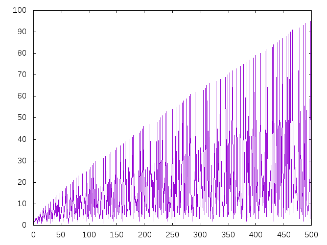

Alturas primas
Se considera una enumeración de los números primos:
p(1)=2, p(2)=3, p(3)=5, p(4)=7, p(5)=11, p(6)=13, p(7)=17,...
Dado un entero x > 1, su altura prima es el mayor i tal que el primo p(i) aparece en la factorización de x en números primos. Por ejemplo, la altura prima de 3500 tiene longitud 4, pues 3500=2^2x5^3x7^1 y la de 34 tiene es 7, pues 34 = 2x17. Además, se define la altura prima de 1 como 0.
Definir las funciones
alturaPrima :: Integer -> Integer alturasPrimas :: Integer -> [Integer] graficaAlturaPrima :: Integer -> IO ()
tales que
- (alturaPrima x) es la altura prima de x. Por ejemplo,
alturaPrima 3500 == 4 alturaPrima 34 == 7
- (alturasPrimas n) es la lista de las altura prima de los primeros n números enteros positivos. Por ejemplo,
alturasPrimas 15 == [0,1,2,1,3,2,4,1,2,3,5,2,6,4,3] maximum (alturasPrimas 10000) == 1229 maximum (alturasPrimas 20000) == 2262 maximum (alturasPrimas 30000) == 3245 maximum (alturasPrimas 40000) == 4203
- (graficaAlturaPrima n) dibuja las alturas primas de los números entre 2 y n. Por ejemplo, (graficaAlturaPrima 500) dibuja

Soluciones
import Data.List (genericLength) import Data.Numbers.Primes (isPrime, primes, primeFactors) import Data.Array import Graphics.Gnuplot.Simple -- 1ª definicioń de alturaPrima -- ============================ alturaPrima :: Integer -> Integer alturaPrima 1 = 0 alturaPrima n = indice (mayorFactorPrimo n) -- (mayorFactorPrimo n) es el mayor factor primo de n. Por ejemplo, -- mayorFactorPrimo 3500 == 7 -- mayorFactorPrimo 34 == 17 mayorFactorPrimo :: Integer -> Integer mayorFactorPrimo = last . primeFactors -- (indice p) es el índice de p en la sucesión de los números -- primos. Por ejemplo, -- indice 7 == 4 -- indice 17 == 7 indice :: Integer -> Integer indice p = genericLength (takeWhile (<=p) primes) -- 2ª definicioń de alturaPrima -- ============================ alturaPrima2 :: Integer -> Integer alturaPrima2 n = v ! n where v = array (1,n) [(i,f i) | i <- [1..n]] f 1 = 0 f k | isPrime k = indice2 k | otherwise = v ! (k `div` (head (primeFactors k))) indice2 :: Integer -> Integer indice2 p = head [n | (x,n) <- indicesPrimos, x == p] -- indicesPrimos es la suceción formada por los números primos y sus -- índices. Por ejemplo, -- λ> take 10 indicesPrimos -- [(2,1),(3,2),(5,3),(7,4),(11,5),(13,6),(17,7),(19,8),(23,9),(29,10)] indicesPrimos :: [(Integer,Integer)] indicesPrimos = zip primes [1..] -- 1ª definición de alturasPrimas -- ============================== alturasPrimas :: Integer -> [Integer] alturasPrimas n = map alturaPrima [1..n] -- 2ª definición de alturasPrimas -- ============================== alturasPrimas2 :: Integer -> [Integer] alturasPrimas2 n = elems v where v = array (1,n) [(i,f i) | i <- [1..n]] f 1 = 0 f k | isPrime k = indice2 k | otherwise = v ! (k `div` (head (primeFactors k))) -- Comparación de eficiencia -- ========================= -- λ> maximum (alturasPrimas 20000) -- 2262 -- (29.97 secs, 13,179,984,536 bytes) -- λ> maximum (alturasPrimas2 20000) -- 2262 -- (2.11 secs, 455,259,448 bytes) -- Definición de graficaAlturaPrima -- ================================ graficaAlturaPrima :: Integer -> IO () graficaAlturaPrima n = plotList [ Key Nothing , PNG "Alturas_primas.png" ] (alturasPrimas2 n)